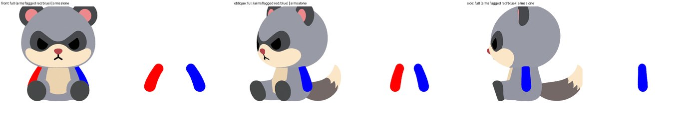
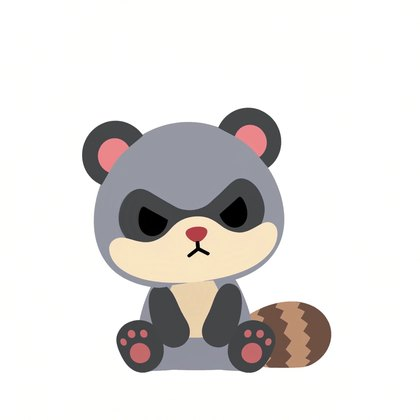
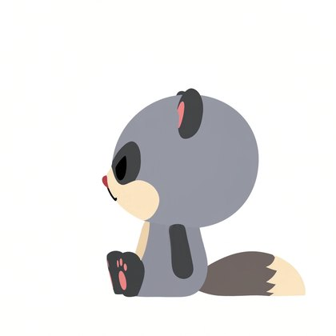
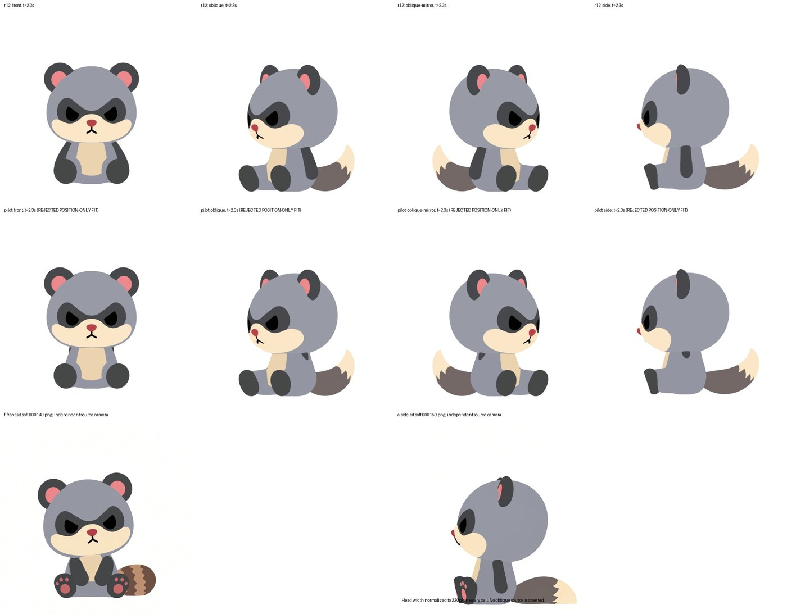

2026-10-03。おすわり＋おにぎり（SE212）の r12。座ると腕が太ももの後ろに隠れて見切れる件。

腕を赤・青に塗り分けて撮影（左：通常、右：腕だけ）。正面では腕が腰・太ももの後ろに入っています。
| 見る方向 | 腕が見えている割合 | 先端（手）が見えている割合 |
|---|---|---|
| 正面 | 約 31% | 約 6% |
| 斜め（手前の腕） | 86% | 97% |
| 横（手前の腕） | 94% | 100% |
元動画（座り終わり）：腕は体の前側に沿って下がり、手は足の少し上でお腹の下に乗っていて全部見えています。



上段 r12／中段 今の動きだけで手の位置を合わせた試作（腕が体に埋まって見えない＝不採用）／下段 元動画
腕を前に平行移動しただけのイメージです（実際の作り直しでは、肩を体の表面に沿って移し、手が太ももの上に乗るよう腕の角度も合わせます）。
| 前への移動量 | 手先と体のすき間 | 手先と太もものすき間 |
|---|---|---|
| 0（r12） | -0.083（めり込み） | -0.055（めり込み） |
| 0.15 | -0.063 | -0.108 |
| 0.25 | -0.032 | -0.133 |
| 0.35 | +0.010（離れる） | -0.156 |
平行移動だけだと、体からは離れても今度は前に盛り上がった太ももに手が入ります。本番では手を太ももの上に乗せる角度も同時に解き、めり込みゼロと「手が8割以上見える」をチェックで確かめます。
A / B / C のどれにするか、チャットで返信してください。A の場合、前への移動量の目安（イメージ上は 0.25〜0.35 あたり）にご希望があれば添えてください。